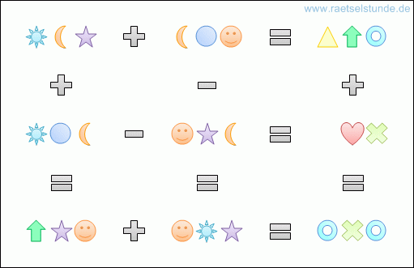

![[prev]](../../icons/DocsLeftArrow.gif)
![[up]](../../icons/DocsUpArrow.gif)
![[next]](../../icons/DocsRightArrow.gif)
The ST/X Constraint Solver
Contents
The ST/X Constraint Solver package provides classes to represent constraint variables,
expressions, domains and a backtracking solver, with configurable and extendable
variable and domain selection stategies.
Problem definition is straight forward, using the Smalltalk language itself.
Due to the expressiveness of the smalltalk language, no DSL is needed;
in fact, problem definitions in Smalltalk look almost similar
(and often even easier to write and understand)
than definitions in other CSP systems, even some with specific constraint definition languages.
The ST/X constraint solver can be used to solve puzzles, crosswords, sodoku, scheduling tasks
and electronic design problems.
Domain Types:
- Integer (interval sets, bitsets)
- Boolean
- Enumerated
Constraint Expressions:
- +, -, *, /, \ (mod)
- even, odd, isPrime,
- <, <=, >, >=, ~=
- allDistinct, allDistinctFrom
- allConform, countForWhich, atLeastForWhich, atMostForWhich
Domain partitioning/enumeration strategies:
- BinaryPartition
- BoundsToMiddle
- MaxToMin
- MiddleToBounds
- MinToMax
- Random
- SequentialSmall
Variable selection strategies:
- Largest
- MaxConstraint
- MinDomain
- MinDomainAndMaxConstraint
- Sequential
- Smallest
For motivation, let's start with a well-known, very simple example, the SEND-MORE-MONEY puzzle.
This puzzle's goal is to find the digit-values for the variables S,E,N,D,M,O,R and Y, such that:
SEND
+ MORE
-------
= MONEY
is a valid arithmetic expression.
Here is the complete code to solve this puzzle; the explanation follows right below:
The expression "Solver anySolutionFor:[...]" asks the solver to
provide a solution for the problem which is specified by the block argument.
Inside the block,
we first declare the problem variables as FD (Finite-Domain) variables,
being a digit in the range 0..9 (except for M and S, which cannot be '0',
as they are used in the high decimal position):
the
"min %% max"-construct is of course a message-send to min (a Number),
and a shortcut for "FDVariable integer:(min to: max)",
which itself is a shortcut for
"FDVariable new domain:(IntegerDomain min:min max:max)".
All of them create a new FD-variable with an integer domain,
limiting their possible values to 0..9 (1..9 for the two exceptions S and M).
Giving each variable a name is not required by the solver;
however, the solution's print-string looks nicer if we do so.
Also the formatted-string printing at the end requires
named values in the solution vector
(without proper names, individual variables from the solution vector
must be accessed via a numeric index).
The next expression:
states that all the variables take on different values.
Without this declaration, the solver might find "(S=9 E=0 N=0 D=0 M=1 O=0 R=0 Y=0)" as a solution.
Next, we declare that the decimal value of SEND and MORE results in MONEY:
Notice that we have to construct the two addends by scaling the digits according
to their decimal position. Also notice the special "=:" operator (colon on the right),
which is called the "unification" operator;
it enforces the two constraint expressions to be unified to the same value
The "(a =: b)" expression can be considered as a shortcut for "(a = b) =: true",
i.e. state that the proposition "(a = b)" must be true in the solution).
Also notice, that due to the precedence rules of the Smalltalk language,
both sides of the unification operator have to be parenthized
(Smalltalk language-wise, "=:" is a binary operator with
the same precedence as the "+" or "-" messages)
This specification-block is given to the solver, and asked to return any solution.
The resturned result vector is:
As we get the result as an ordered dictionary, which maps both variable names and numeric indices to solution-values,
and thanks to giving them variables a name, we can pretty-print the solution easily with:
which prints:
When specifying a problem, a set of FD-expressions is created.
FD expressions consist of a variable or arithmetic-expression,
a domain, which limits the set of possible values it can take.
Hidden to our eyes is the set of propagators,
which notify other constraint expressions whenever
this domain changes.
Whenever new information arrives (for example, during the declaration phase),
or when the solver tries to set a variable's value,
information about these domain changes is passed around via the
propagators, and other domains are adjusted as required.
The goal of those propagators is to delimit the domains of each variable as much
as possible, in order to reduce the number of possible value-combinations
which gave to be tried by the solver.
For example, if we define two variables A,B each with possible values from [0..5]
and a sum of them with:
each FD-expression already has an idea of what its possible domain is.
The domain is shown in the printString, but there are also accessors (domain and domain:).
The printStrings of A, B and sum are:
For A, B, this was obvious, as we had specified it before.
However, for sum, the domain was
computed automatically.
We get nicer printStrings, if we give each a name:
we get:
Now, lets assume, that we know that the result from multiplying A and B is positive:
looking now at the variables, we get:
i.e. the constraint propagators found out themself, that A and B cannot be 0,
and that the sum must therefore be 2 or larger.
We might even know that the sum has certain qualities:
which further reduces the domains of A and B:
Once we have defined the set of constraints, the solver starts to systematically generate
and validate a set of possible value combinations.
In the above example, a naïve algorithm might try (1..4)x(1..4) = 16 combinations.
However, due to the propagation of changes into the domains,
every tried value-choice immediately affects the domains of all dependent variables.
For example, if the solver tries a value of 3 as a possible value for A,
the domain for B changes to (1..2). I.e. the values 0, 3, 4 and 5 are NEVER even considered in combination with A=3.
Effectively, in the above example, the tried combinations will only be:
A = 1, B = 1
A = 1, B = 2
A = 1, B = 3
A = 1, B = 4
A = 2, B = 1
A = 2, B = 2
A = 2, B = 3
A = 3, B = 1
A = 3, B = 2
A = 4, (B automatically constraint to 1)
|
The domain information is used by the solver to prune the searchtree,
when it tries all possible variable value combinations.
The following example demonstates this::
Without additional domain information, all possible combinations are tried:
generates:
with additional constraints, some solutions are not even tried.
For example, if we announce that x <= y <= z with:
we get:
If enough information is available, the constraints alone are sufficient
to provide a consistent solution. Here is a famous puzzle, asking for how
many pigs and hens a farmer has, if the number of legs adds up to 22:
With this knowledge, it should be clear, that there are multiple ways to specify
a constraint problem, and that the amount of information in form of constraints
might affect the overall performance, by possibly reducing the number of
value combinations that have to be tried by the solver.
Coming back to the puzzle, an alternative, which makes the additions concrete, could have been:
In the above we deal with the carry from each pair of added digits:
DE is the sum of D and E.
Y is the ones (DE modulu 10)
and
cDE is the carry (the tens, (DE divided by 10).
Arriving at the halt at the end of the block,
we see that the variables already have much smaller domains:
So, the setup already reduced M's domain to a single value.
And also found that S can only take two values.
It is obvious, that this reduces the solver's search space.
To get a feeling for the solver's operation,
let us trace its set of tried combinations:
Using boolean constraints, the solver is able to perform some (limited) propositional reasoning.
Here is a classic example taken from a proof system:
Here is one more example of propositional reasoning, in the shape of a Scottish puzzle.
A private club has the following rules:
1. Every non-scottish member wears red socks
2. Every member wears a kilt or doesn't wear red socks
3. The married members don't go out on Sunday
4. A member goes out on Sunday if and only if he is Scottish
5. Every member who wears a kilt is Scottish and married
6. Every scottish member wears a kilt
Show that this club's rules are so strict, it won't have any member !
the following demonstrates, that it is not possible to become a member of this club:
In the following simple scheduling problem,
a set of conference speeches must be scheduled during one day.
Each speech lasts exactly one hour (including questions and a coffee break),
and only one conference room is available.
Furthermore, each speaker has other commitments,
and is available only for a limited fraction of the day.
A particular instance of this problem is given in Table 1,
where the fractions are defined by an earliest and latest possible time slot.
| Speaker | Earliest | Latest |
| Sebastian | 3 | 6 |
| Frédéric | 3 | 4 |
| Jan-Georg | 2 | 5 |
| Krzysztof | 2 | 4 |
| Maarten | 3 | 4 |
| Luca | 1 | 6 |
Table 1. Time slots for the speakers
This problem can be modeled as follows.
We create one variable per speaker,
whose value will be the period of his speech.
The initial domains of the variables will be the available time intervals as stated in Table 1.
Since two speeches cannot be held at the same time in the same conference room,
the period for two different speakers must be different.
The constraints for this scheduling problem thus become:
|
x1
ϵ [3, 6], x2 ϵ [3, 4], x3 ϵ [2, 5],
|
|
x4 ϵ [2, 4], x5 ϵ [3, 4], x6 ϵ [1, 6],
|
|
allDifferent(x1, x2 , x3 , x4 , x5 , x6).
|
The code to solve this is:
to get:
Here is another puzzle in the same spirit as SEND+MORE=MONEY:

The program to solve is trivial:
Here is another puzzle which combines some topology:
The eight number puzzle asks you to label the nodes of a graph
with the values 1 to 8 such that no two connected nodes have consecutive values:
1--2
/|\/|\
/ |/\| \
3--4--5--6
\ |\/| /
\ |/\|/
7--8
the nodes are numbered top-to-bottom, left to right.
Another classic is the 8-Queens puzzle. The goal os to place 8 queens onto a chessboard,
so they dont hit each other:
Two interesting variants are found here: first, the queens are represented as Point instances,
with their coordinates being FD-variables. Second, and more interesting is that one of the
constraints is defined as a smalltalk validation-block.
The magic squares problem is to label a n by n square so that the sum
of every row, column and diagonal are equal.
A normal magic square contains the integers 1 to n2.
This is a very old kind of puzzle - dating back to ancient chinese mathematics.
Here is an example:
 Copyright © 2002 Claus Gittinger, all rights reserved
Copyright © 2002 Claus Gittinger, all rights reserved
<info@exept.de>
Doc $Revision: 1.13 $ $Date: 2016-07-11 09:24:05 $